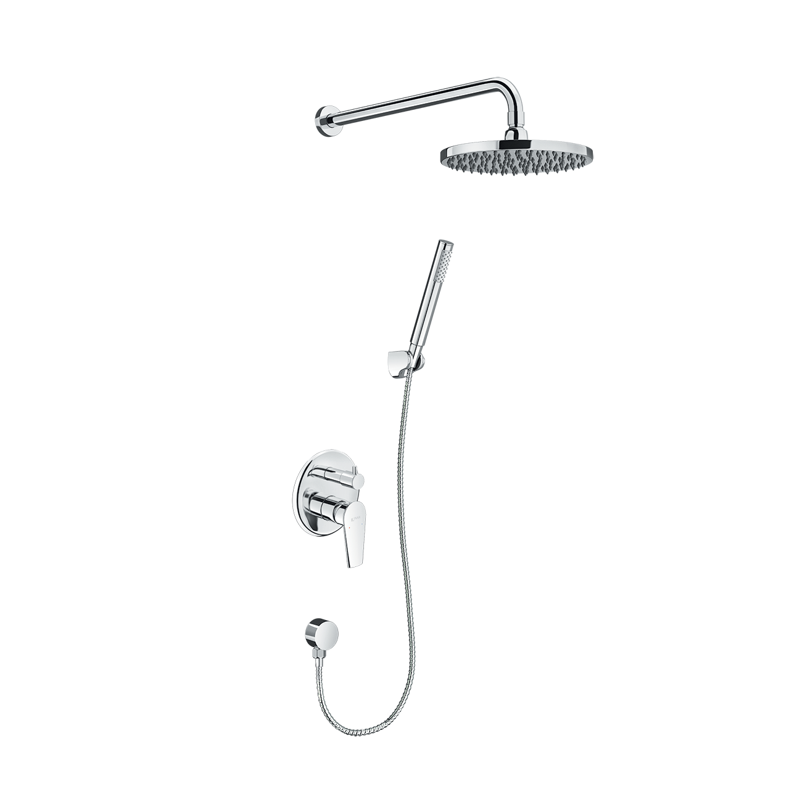
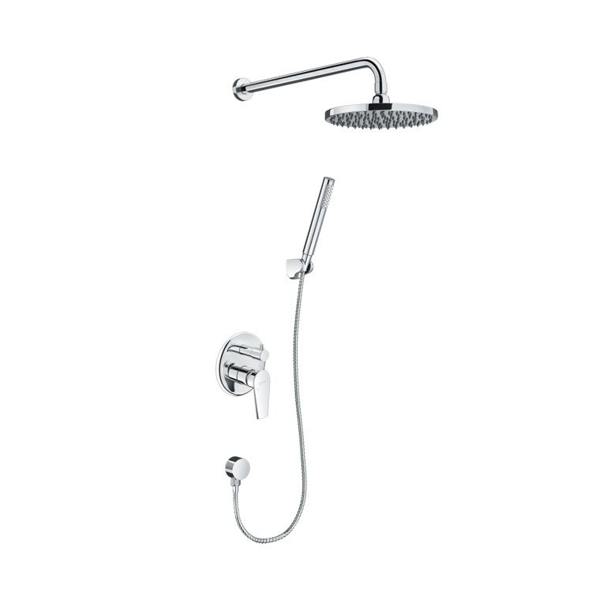
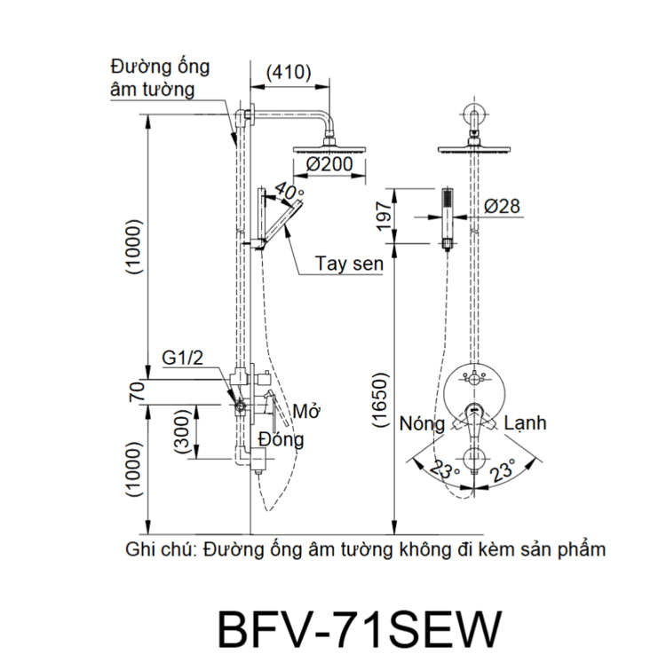

Sen tắm âm tường BFV-71SEW đến từ thương hiệu thiết bị vệ sinh INAX, mang đến sự tiện nghi, bền bỉ và vẻ đẹp sang trọng cho mọi không gian phòng tắm. Với phong cách hiện đại, tinh tế, sản phẩm không chỉ tối ưu hóa diện tích mà còn tạo nên tổng thể hài hòa cho những không gian yêu thích sự tối giản.Thiết kế sen tắm âm tường BFV-71SEWSen tắm âm tường BFV-71SEW được thiết kế âm tường giúp phòng tắm trở nên gọn gàng, trang nhã, đặc biệt phù hợp với những không gian phòng tắm có diện tích nhỏ.Bát sen tắm đầu được gắn trực tiếp lên tường, tạo cảm giác tinh giản và hiện đại cho khu vực tắm.Tay sen được thiết kế gọn nhẹ, mang lại vẻ đẹp trang nhã và sự linh hoạt tối đa cho người sử dụng.Sản phẩm trang bị một tay gạt duy nhất để điều chỉnh lưu lượng nước và nhiệt độ, mang lại trải nghiệm sử dụng tiện lợi và nhanh chóng.Trải nghiệm tắm thư giãn, an toàn cho sức khỏeBát sen tắm âm tường BFV-71SEW được thiết kế đặc biệt giúp tia nước phun ra đều khắp cơ thể, tạo cảm giác thư giãn tuyệt đối.Thân vòi có hàm lượng chì thấp, giúp bảo vệ sức khỏe và đảm bảo an toàn cho nguồn nước sinh hoạt của gia đình bạn.Tay vặn vòi và công nghệ đĩa Cartridge được tối ưu hóa để vừa đảm bảo áp lực nước mạnh mẽ, vừa hỗ trợ tiết kiệm nước hiệu quả.Độ bền vượt trội, đạt tiêu chuẩn INAXThân van được đúc từ đồng thau nguyên khối chắc chắn, đảm bảo kết cấu bên trong vững vàng và tuổi thọ sản phẩm lâu dài.Sen tắm âm tường BFV-71SEW sử dụng đĩa Cartridge cao cấp chống mài mòn, giúp kiểm soát dòng chảy chính xác và ngăn ngừa tình trạng rò rỉ nước.Bề mặt được bao phủ bởi lớp mạ Crom/Nikel chất lượng cao, không chỉ tạo vẻ sáng bóng sang trọng mà còn bền vững với thời gian, chống oxy hóa hiệu quả trong môi trường ẩm ướt.Vận hành ổn địnhSen tắm âm tường BFV-71SEW hoạt động hiệu quả trong dải áp lực nước từ 0.15 MPa - 0.75 MPa, đảm bảo dòng chảy ổn định và mạnh mẽ cho cả nguồn nước nóng và lạnh.Video giới thiệu sen tắm INAXBản vẽ sen tắm âm tường BFV-71SEWThông số kỹ thuậtChất liệuThân van đồng thau mạ Crom/NikelLoạiSen tắm âm tường nóng lạnhKích thước-Thiết kếHiện đại, tối giản, sen đầu gắn tườngThương hiệuINAXTính năng- Bát sen phun đều, sảng khoái - Đĩa Cartridge bền bỉ, tiết kiệm nước - Vòi ít chì, an toàn cho sức khỏeÁp lực nước0.15 MPa - 0.75 MPaKhác- Hotline tư vấn và bảo hành: 18006633
Sen tắm âm tường BFV-71SEW
Vòi chậu thương hiệu INAX.
Đã cập nhật danh sách yêu thích.
DANH MỤC: Vòi chậu
MÃ SẢN PHẨM: BFV-71SEW
DEPTH: mm
HEIGHT: mm
WIDTH: mm
Sen tắm âm tường BFV-71SEW đến từ thương hiệu thiết bị vệ sinh INAX, mang đến sự tiện nghi, bền bỉ và vẻ đẹp sang trọng cho mọi không gian phòng tắm. Với phong cách hiện đại, tinh tế, sản phẩm không chỉ tối ưu hóa diện tích mà còn tạo nên tổng thể hài hòa cho những không gian yêu thích sự tối giản.Thiết kế sen tắm âm tường BFV-71SEWSen tắm âm tường BFV-71SEW được thiết kế âm tường giúp phòng tắm trở nên gọn gàng, trang nhã, đặc biệt phù hợp với những không gian phòng tắm có diện tích nhỏ.Bát sen tắm đầu được gắn trực tiếp lên tường, tạo cảm giác tinh giản và hiện đại cho khu vực tắm.Tay sen được thiết kế gọn nhẹ, mang lại vẻ đẹp trang nhã và sự linh hoạt tối đa cho người sử dụng.Sản phẩm trang bị một tay gạt duy nhất để điều chỉnh lưu lượng nước và nhiệt độ, mang lại trải nghiệm sử dụng tiện lợi và nhanh chóng.Trải nghiệm tắm thư giãn, an toàn cho sức khỏeBát sen tắm âm tường BFV-71SEW được thiết kế đặc biệt giúp tia nước phun ra đều khắp cơ thể, tạo cảm giác thư giãn tuyệt đối.Thân vòi có hàm lượng chì thấp, giúp bảo vệ sức khỏe và đảm bảo an toàn cho nguồn nước sinh hoạt của gia đình bạn.Tay vặn vòi và công nghệ đĩa Cartridge được tối ưu hóa để vừa đảm bảo áp lực nước mạnh mẽ, vừa hỗ trợ tiết kiệm nước hiệu quả.Độ bền vượt trội, đạt tiêu chuẩn INAXThân van được đúc từ đồng thau nguyên khối chắc chắn, đảm bảo kết cấu bên trong vững vàng và tuổi thọ sản phẩm lâu dài.Sen tắm âm tường BFV-71SEW sử dụng đĩa Cartridge cao cấp chống mài mòn, giúp kiểm soát dòng chảy chính xác và ngăn ngừa tình trạng rò rỉ nước.Bề mặt được bao phủ bởi lớp mạ Crom/Nikel chất lượng cao, không chỉ tạo vẻ sáng bóng sang trọng mà còn bền vững với thời gian, chống oxy hóa hiệu quả trong môi trường ẩm ướt.Vận hành ổn địnhSen tắm âm tường BFV-71SEW hoạt động hiệu quả trong dải áp lực nước từ 0.15 MPa - 0.75 MPa, đảm bảo dòng chảy ổn định và mạnh mẽ cho cả nguồn nước nóng và lạnh.Video giới thiệu sen tắm INAXBản vẽ sen tắm âm tường BFV-71SEWThông số kỹ thuậtChất liệuThân van đồng thau mạ Crom/NikelLoạiSen tắm âm tường nóng lạnhKích thước-Thiết kếHiện đại, tối giản, sen đầu gắn tườngThương hiệuINAXTính năng- Bát sen phun đều, sảng khoái - Đĩa Cartridge bền bỉ, tiết kiệm nước - Vòi ít chì, an toàn cho sức khỏeÁp lực nước0.15 MPa - 0.75 MPaKhác- Hotline tư vấn và bảo hành: 18006633
DANH MỤC: Vòi chậu
MÃ SẢN PHẨM: BFV-71SEW
DEPTH: mm
HEIGHT: mm
WIDTH: mm